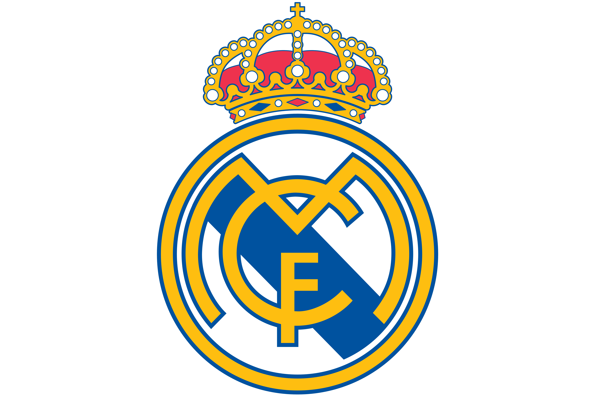

Real Madrid's Champions League Glory

No club in the world has dominated European football like Real Madrid. Los Blancos have won the Champions League a record 15 times, starting with the first five European Cups in a row from 1956 to 1960. That early run established the club as the standard in European football.
The modern era brought more history, including three straight titles from 2016 to 2018 under Zinedine Zidane. Real Madrid have also built a reputation for dramatic late comebacks, which is why fans never give up until the final whistle.